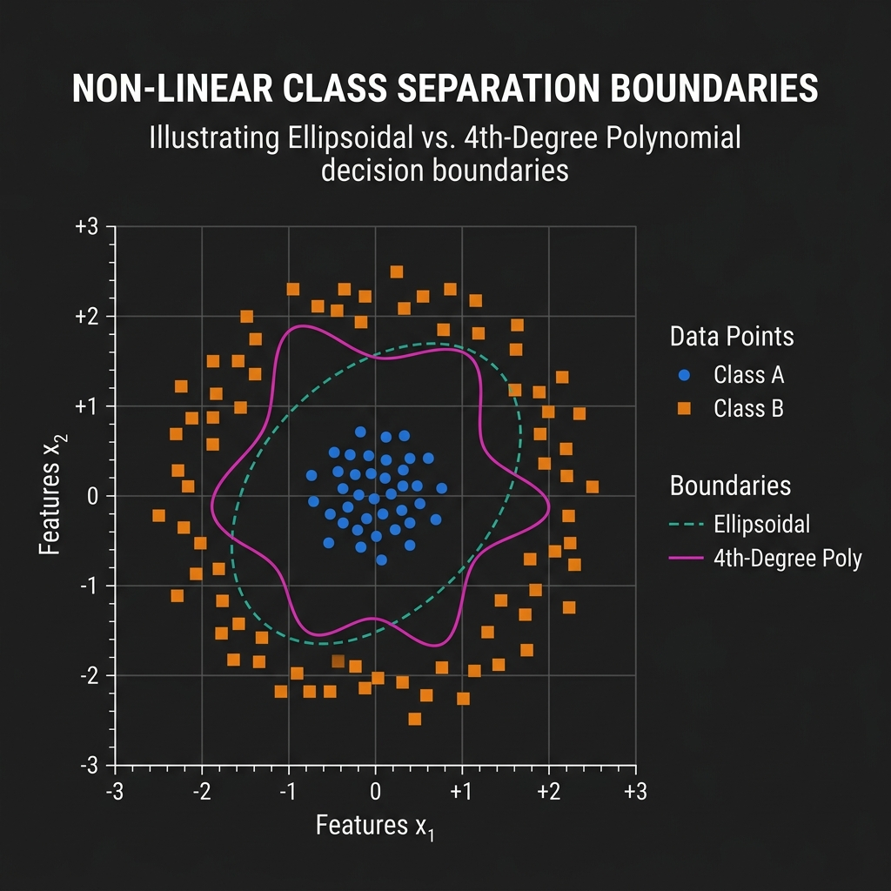

Geometric and Statistical Optimization#
This page covers applications of convex optimization in geometric problems and statistical estimation based on Chapters 7 and 8 of Stephen Boyd’s Convex Optimization.
1. Statistical Estimation (Chapter 7)#
Many foundational statistical estimation problems can be formulated directly as convex optimization problems, allowing them to be solved efficiently and with guaranteed global optimality.
Maximum Likelihood Estimation (MLE)#
In MLE, we estimate the parameter vector \(\theta\) of a probability distribution \(p(y; \theta)\) from observed data \(y\). The goal is to maximize the likelihood function, or equivalently, minimize the negative log-likelihood function:
If \(p(y; \theta)\) is log-concave in \(\theta\), then the negative log-likelihood is convex, and finding the MLE is a convex optimization problem.
Example: Linear Regression with Gaussian Noise#
Consider \(y_i = x_i^T \theta + v_i\) where \(v_i \sim \mathcal{N}(0, \sigma^2)\) are independent Gaussian noise terms. The MLE objective is:
This is a classic Least-Squares optimization problem, which is a convex QP and can be solved analytically or numerically.
2. Geometrical Problems (Chapter 8)#
Convex optimization provides elegant tools to solve geometric problems involving distances, projections, and bounding volumes.
2.1 Projection on a Convex Set#
The projection of a point \(x_0\) onto a closed convex set \(C\) is the point \(P_C(x_0) \in C\) that is closest to \(x_0\):
Since the objective is strictly convex, the projection is unique.
Hyperplane Projection: Projecting \(x_0\) onto \(a^T x = b\) has the analytical solution:
\[P_C(x_0) = x_0 - \frac{a^T x_0 - b}{\|a\|_2^2} a\]Halfspace Projection: Projecting \(x_0\) onto \(a^T x \leq b\) has the solution:
\[P_C(x_0) = x_0 - \frac{\max(0, a^T x_0 - b)}{\|a\|_2^2} a\]
2.2 Distance Between Convex Sets#
The distance between two closed convex sets \(C\) and \(D\) is the length of the shortest vector connecting them. We can find the closest points by solving:
This is a convex optimization problem in variables \(x\) and \(y\). If \(C\) and \(D\) do not intersect, their separating hyperplane can be derived directly from the optimal Lagrange multipliers.
2.3 Euclidean Distance and Angle Problems#
Many geometric problems involve constraints on the relative distances or angles between points. For instance, we may wish to find the positions of \(k\) points \(x_1, \dots, x_k \in \mathbb{R}^n\) given partial bounds on their Euclidean distances:
or bounds on the angles between vectors:
These bounds can be represented using the Gram Matrix \(G = X^T X\), where \(X = [x_1, \dots, x_k]\). Since \(G \succeq 0\), we can express distance and angle bounds as linear constraints on the entries of \(G\), transforming the coordinate estimation into a Semidefinite Program (SDP) with a rank constraint.
2.4 Extremal Volume Ellipsoids#
An ellipsoid \(\mathcal{E}\) in \(\mathbb{R}^n\) can be represented as:
where \(M \in \mathbb{S}^n_{++}\) (symmetric positive definite matrix). The volume of \(\mathcal{E}\) is proportional to \(\det(M^{-1})\).
Löwner-John Ellipsoid (Minimum Volume enclosing ellipsoid): To find the minimum volume ellipsoid containing a set of points \(x_1, \dots, x_N\), we solve:
\[\begin{split}\begin{aligned} \text{minimize} \quad & -\ln \det M \\ \text{subject to} \quad & \| M x_i + d \|_2 \leq 1, \quad i=1, \dots, N \\ & M \succ 0 \end{aligned}\end{split}\]Since \(-\ln \det M\) is a convex function on \(\mathbb{S}^n_{++}\), this is a convex optimization problem (specifically an SDP).
Maximum Volume Inscribed Ellipsoid: To find the largest ellipsoid that fits inside a polyhedron defined by linear inequalities \(a_i^T x \leq b_i, \, i=1, \dots, m\), we solve:
\[\begin{split}\begin{aligned} \text{minimize} \quad & -\ln \det M \\ \text{subject to} \quad & \| M a_i \|_2 + a_i^T d \leq b_i, \quad i=1, \dots, m \\ & M \succ 0 \end{aligned}\end{split}\]

2.5 Centering Problems#
Centering problems seek to find a representative “middle” point \(x\) inside a convex set \(C\).
Chebyshev Center: The center of the largest Euclidean ball \(\mathcal{B}(x_c, r) = \{ x \mid \|x - x_c\|_2 \leq r \}\) that can be inscribed in the set \(C\). For a polyhedron \(C = \{ x \mid a_i^T x \leq b_i, \, i=1, \dots, m \}\), the Chebyshev center is found by solving the Linear Program (LP):
\[\begin{split}\begin{aligned} \text{minimize} \quad & -r \\ \text{subject to} \quad & a_i^T x_c + r \|a_i\|_2 \leq b_i, \quad i=1, \dots, m \\ & r \geq 0 \end{aligned}\end{split}\]Analytic Center: The point that minimizes the logarithmic barrier function for the set of inequalities:
\[\text{minimize} \quad -\sum_{i=1}^m \ln(b_i - a_i^T x)\]This point is unique and lies strictly in the interior of the polyhedron.
2.6 Classification and Discrimination#
We want to separate two sets of points \(\{x_1, \dots, x_N\}\) and \(\{y_1, \dots, y_M\}\) using a hyperplane \(a^T z + b = 0\).
Linear Discrimination: The sets are linearly separable if there exists a vector \(a \in \mathbb{R}^n\) and a scalar \(b \in \mathbb{R}\) such that:
\[a^T x_i + b > 0, \quad i=1, \dots, N \quad \text{and} \quad a^T y_j + b < 0, \quad j=1, \dots, M\]This is solved using linear feasibility methods.
Support Vector Classifier (Max-Margin Separation): To find the separating hyperplane that maximizes the margin (distance) between the two classes, we solve:
\[\begin{split}\begin{aligned} \text{minimize} \quad & \frac{1}{2} \|a\|_2^2 \\ \text{subject to} \quad & a^T x_i + b \geq 1, \quad i=1, \dots, N \\ & a^T y_j + b \leq -1, \quad j=1, \dots, M \end{aligned}\end{split}\]This QP formulation is the foundation of Support Vector Machines (SVM).

Non-linear Class Separation#
When two classes are not linearly separable, we can project the data into a higher-dimensional space or use non-linear boundary functions (such as ellipsoidal or high-degree polynomial kernels):
{kind=link}

2.7 Placement and Location Problems#
Placement problems involve positioning a set of nodes \(x_1, \dots, x_k \in \mathbb{R}^n\) in space to minimize a cost function based on the distances between connected nodes. For a graph with edge weights \(w_{ij}\), we minimize the total connection cost:
where \(f\) is a monotonic, convex cost function.
If \(f(d) = d^2\) (squared Euclidean distance), the problem reduces to a set of linear equations (quadratic optimization).
If \(f(d) = d\) (Euclidean distance), the problem is called the multi-dimensional Weber problem, which is formulated as an SOCP.
Python Example: Projecting a Point onto a Polyhedron#
Here is a Python script using scipy.optimize to project a 2D point onto a polyhedral convex set defined by linear inequalities (\(Gx \leq h\)):
import numpy as np
from scipy.optimize import minimize
# Point to project
x0 = np.array([3.0, 4.0])
# Define the convex set (polyhedron): Gx <= h
# Inequalities:
# x1 >= 0 => -x1 <= 0
# x2 >= 0 => -x2 <= 0
# x1 + x2 <= 2 => x1 + x2 <= 2
G = np.array([[-1.0, 0.0],
[0.0, -1.0],
[1.0, 1.0]])
h = np.array([0.0, 0.0, 2.0])
# Objective function: squared Euclidean distance
def objective(x):
return np.sum((x - x0) ** 2)
# Constraint definition for Scipy (must be >= 0)
# h - Gx >= 0
def constraint_func(x):
return h - G @ x
constraints = {'type': 'ineq', 'fun': constraint_func}
# Run minimization
result = minimize(objective, x0, constraints=constraints)
projected_point = result.x
print(f"Point to project: {x0}")
print(f"Projected point: {projected_point}")
print(f"Distance: {np.sqrt(result.fun):.4f}")